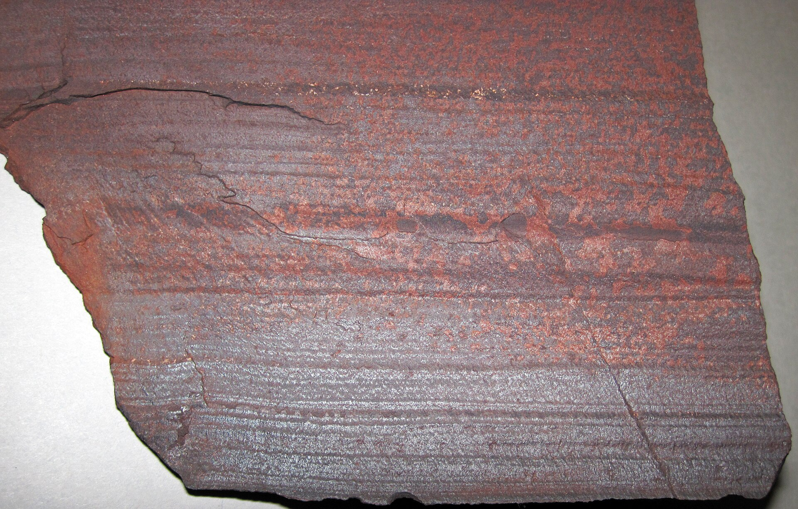

第 3 章
天空的叹息
常识告诉我们，温室气体让地球变暖，这是个坏消息。但在地球历史的某个时刻，温室气体的消失几乎杀死了这颗行星上所有的生命。而制造这场灾难的元凶，正是我们今天赖以呼吸的氧气。

条带状铁建造（BIF）岩石样本
图源：维基共享资源 · James St. John · CC BY 2.0
这个反直觉的判断背后，隐藏着大氧化事件最深刻的悖论：氧气不仅是毒物，它还是一种高效的温室气体清除剂。当它终于突破海洋的铁防线涌入大气层时，它做的第一件事不是为复杂生命铺路，而是将整个行星推入了地质史上最漫长的一次深冻。
要理解这场灾难如何发生，必须从一个化学反应的命运转折讲起。第二章结束于铁墙的崩塌。距今约二十四亿年前，全球海洋中的溶解铁离子基本沉淀殆尽，条带状铁建造停止了大规模沉积。
这不是一个渐进消退的过程——地质记录显示，在南非、澳大利亚、北美和波罗的地盾等古老克拉通上，条带状铁建造的终止几乎是同时的。海洋失去了它最主要的氧气缓冲剂。在此前的数亿年里，蓝绿菌释放的每一分子氧气几乎都在海水中找到了归宿：与亚铁离子结合，生成不溶于水的三价铁氧化物，沉入海底。
这个化学清除机制的效率极高，以至于尽管蓝绿菌已经存在了近十亿年，大气中的氧气浓度始终被压制在极低水平——可能不到现代大气氧含量的十万分之一。当最后一批可溶性亚铁离子被氧化沉淀，海洋的化学缓冲能力骤然瓦解。蓝绿菌继续光合作用，继续裂解水分子，继续释放氧气——但这一次，氧气找不到足够的还原性物质来消耗自己。
自由氧分子开始在海洋表层水体中积累，浓度缓慢爬升。然后，它们开始逃逸。氧气从海水进入大气的过程遵循亨利定律：气体在液体中的溶解量与液面上该气体的分压成正比。当海水表层氧浓度升高，与之平衡的大气氧分压也随之上升。
一开始，这个逃逸过程是克制的。早期大气中仍然存在着大量还原性气体——甲烷、氢气、一氧化碳——它们会与新生的大气氧气发生反应，构成大气层的化学缓冲。但这个缓冲池的容量远小于海洋中的铁离子储量。它被填满的速度，比铁缓冲池快得多。
美国地质学家普雷斯顿·克劳德在二十世纪七十年代的工作，首次将这一系列事件串联成一个连贯的叙事。
克劳德注意到，条带状铁建造的终结与大氧化事件的开端在时间上紧密衔接，而大氧化事件本身又与冰川沉积物在层位上相邻。他提出了一个在当时看来大胆的假说：这三者之间存在因果关系——氧气先是填满了海洋的铁缓冲池，然后涌入大气，改变了大气化学组成，最终触发了冰川作用。
克劳德的假说在八十年代得到了海因里希·霍兰德的进一步完善。霍兰德将大氧化事件的主要氧化阶段定在距今二十二亿至十九亿年之间，并明确指出甲烷在这一过程中的关键角色。
他的论证核心围绕一条化学反应式展开：CH₄ + 2O₂ → CO₂ + 2H₂O。这条方程式看起来平淡无奇——甲烷与氧气反应，生成二氧化碳和水。但它的气候后果是毁灭性的。
问题出在两种温室气体的效率差异上。在现代大气中，甲烷的浓度只有约百万分之一点八，这个数字小到几乎可以忽略不计。但甲烷分子的温室效应强度是二氧化碳的二十到三十倍——它吸收红外辐射的能力远超二氧化碳。在太古代，情况完全不同。
当时的大气是还原性的，氧气几乎不存在，甲烷可以稳定积累。产甲烷古菌——一群在厌氧环境中代谢的微生物——在太古代海洋和沉积物中大量繁殖，持续向大气排放甲烷。地质证据和地球化学模型估算，太古代大气中的甲烷浓度可能达到数百甚至数千ppm，是现代水平的数百到上千倍。
甲烷构建了一个强大的温室穹顶。太古代太阳的亮度比今天低约百分之二十到二十五——这是天体物理学的定论，被称为暗淡年轻太阳悖论。按照纯粹的辐射平衡计算，如此微弱的太阳辐射不足以维持地球表面的液态水。但地质记录清楚表明，太古代不仅存在液态水，还存在广泛的海洋和沉积作用。解决这个悖论的关键，就是甲烷。高浓度的甲烷和其他温室气体弥补了太阳辐射的不足，将地球表面温度维持在适宜液态水存在的范围。
当氧气涌入大气，这个温室穹顶开始崩塌。氧气与甲烷的反应在常温下是缓慢的，但在大气中存在光化学反应路径，反应速率大大加快。
更关键的是，氧气浓度的上升本身就会抑制产甲烷古菌的活性——这些微生物是专性厌氧菌，氧气对它们有毒。甲烷的生产端被压制，而甲烷的消耗端被氧气加速。大气中的甲烷浓度开始急剧下降。
地球化学证据支持这一推断。在大氧化事件对应的地层中，硫同位素记录出现了显著异常。在缺氧大气中，火山喷发出的二氧化硫会在高层大气中发生独特的光化学反应，产生具有异常硫同位素组成的产物，这些产物沉降到地表后保存在沉积岩中。当大气氧气浓度上升到一定阈值，这种非质量分馏效应就会消失。这个阈值大约是现代大气氧浓度的十万分之一到百万分之一——一个极低的数值，但足以改变大气化学。
硫同位素信号的消失，精确标记了氧气突破大气缓冲池的时刻。甲烷浓度崩溃的气候效应是迅速而猛烈的。气候模型估算，大气甲烷浓度从太古代水平下降到接近零，全球平均温室效应强度减弱了相当于每平方米数十瓦特的辐射强迫。用更直观的语言说：地球突然失去了它的保温毯。全球平均气温在数万年内下降了数十摄氏度。
这个时间尺度在人类感知中是漫长的，但在地质历史上是一瞬间。冰开始生长。高纬度地区的海水首先结冰。冰盖从两极向中纬度推进，年复一年，冰川前沿不断南移。
关键的正反馈机制在这里启动：冰面是白色的，它对太阳辐射的反照率远高于深色的海水和陆地。更多冰意味着更多阳光被反射回太空，意味着更少的能量被地球吸收，意味着更冷的气温，又意味着更多的冰。这是一条单向的、自我加速的冷却路径。
地质学家在加拿大安大略省休伦湖北岸发现的冰川沉积物，就是这个过程的遗骸。那里出露的休伦超群地层中，包含了三层明显的冰碛岩单元，被非冰川沉积物分隔。冰碛岩是一种特征鲜明的岩石——它由冰川搬运、研磨后堆积的混杂砾石层构成，其中的砾石大小悬殊，从细粒黏土到直径数米的巨砾都有，被细粒基质包裹。这种岩石只能形成于冰川环境。三层冰碛岩表明，休伦冰期不是一次单一的冰川进退，而是至少三轮大规模的冰川扩张与收缩。
每一层都讲述着同一个故事：冰川曾经覆盖了这片土地，研磨基岩，搬运巨石，在冰退后留下混杂的沉积物。
但这些冰碛岩最令人震惊的特征不是它们的层数，而是它们的古纬度。古地磁学测量通过分析岩石形成时锁定的地球磁场方向来确定其原始纬度。对休伦冰期冰川沉积物的测量结果表明，这些岩石形成于当时所有纬度的克拉通上。在南非的卡普瓦尔克拉通、西澳大利亚的皮尔巴拉克拉通、北美的怀俄明克拉通和加拿大地盾，同时期的冰川遗迹被一一确认。其中一些地点的古纬度低至十度以内——也就是说，冰川曾经延伸到几乎赤道的位置。
这个发现最初让地质学家难以置信。在现代地球，冰川只存在于高纬度和高海拔地区。赤道附近的海平面位置出现冰川，意味着全球气候系统发生了根本性的崩塌。
这就是雪球地球假说的地质基础。这个假说认为，在休伦冰期的高峰，地球表面被冰层大面积覆盖，冰的边界延伸至赤道附近的海平面。从太空看，地球将是一个白色的大理石球体，而不是我们今天熟悉的蓝色星球。
赤道地区的平均气温可能降至零下二十摄氏度以下，与现代南极洲内陆相当。全球平均气温可能低至零下五十摄氏度。
雪球地球假说并非毫无争议。一些地质学家认为，赤道附近可能仍然存在开阔水域，形成一个“雪泥球”而非完全冰封的状态。争议的焦点在于：如果地球完全冰封，光合作用将如何维持？如果光合作用停止，食物链将如何运转？如果生命被完全封锁在冰层之下，它如何幸存？这些都是合理的质疑。但无论全冰封还是部分冰封，休伦冰期的严酷程度都是毋庸置疑的。即使是最保守的估计，也承认当时全球大部分表面被冰覆盖，海洋冰层厚度可能达到数百米。
对于刚刚从氧化毒杀中幸存下来的微生物世界，这是雪上加霜。海洋表面覆盖着厚厚的冰层，阳光只能透过冰层中稀少的裂缝和薄冰区域渗入。光合作用蓝绿菌被限制在这些有限的光照窗口，初级生产力——整个生态系统通过光合作用固定碳的速率——急剧下降。冰层隔绝了海洋与大气的气体交换，冰下海水中的氧气逐渐被消耗，而新的氧气无法从大气补充。
厌氧环境在冰下重新扩张，为那些在氧化灾难中幸存下来的厌氧微生物提供了暂时的避难所。但营养盐的循环路径被切断了。在正常海洋中，上升流将深海的营养盐带到表层，支撑浮游生物的繁荣。在冰封海洋中，这种垂直混合几乎停滞。表层水体中的营养盐被耗尽后，初级生产力进一步崩溃。依赖蓝绿菌释放的有机物的异养微生物面临着食物短缺。整个生物圈的生产力可能下降了数个数量级。
这是一个双重筛选的残酷时刻。那些刚刚演化出抗氧化机制的微生物，现在又必须面对严寒和黑暗。那些依赖光合作用的蓝绿菌，被压缩到冰层的缝隙中苟延残喘。无法承受双重压力的幸存者种群规模骤然缩减，被迫向热液喷口及冰层之下的封闭水体等极端庇护所聚集。
热液喷口成为最重要的生命绿洲。在深海洋底，地球内部的热能驱动着独立的生态系统，不依赖阳光和光合作用。化能自养微生物利用喷口释放的硫化氢、氢气和甲烷作为能量来源，构建了一个黑暗中的食物网。当冰封覆盖了表层世界，这些深海绿洲维持了生命的延续。
冰下的封闭水体——例如被冰层隔绝的湖泊和内陆海——也可能成为庇护所，保存了部分微生物群落。这场冰封持续了大约三亿年。从距今二十四点五亿年前到二十二点二亿年前，地球被困在冰雪之中。
三亿年是什么概念？从恐龙灭绝到今天，只过去了大约六千六百万年。三亿年是这段时间的四倍多。这是地球生命史上最长的一次冰期，也是最接近将生命完全清零的一次。
冰期的终结，同样与大气化学有关。火山活动在冰封期间并未停止。板块构造运动持续将地幔中的挥发性物质输送到地表。火山喷发释放二氧化碳，但在冰封地球上，正常的二氧化碳清除机制——硅酸盐岩石风化——几乎完全停滞。液态水无法在冰面上流动，化学风化作用被抑制。二氧化碳在大气中缓慢积累，浓度持续攀升。
根据计算，解封雪球地球所需的二氧化碳浓度大约为今天的三百五十倍，也就是大气含量的百分之十三。这是一个令人窒息的数字。当温室效应最终压倒了冰面的反照率效应，冰盖开始退缩。
反照率正反馈这次向相反方向运转：冰融化暴露出的深色海水和陆地吸收更多太阳辐射，加速升温，融化更多冰。地质记录显示，休伦冰期的终结可能是突然的——在地质尺度上，可能只用了几千年就从完全冰封转变为温室状态。覆盖在冰碛岩之上的盖帽碳酸盐岩，是这个突然解冻的直接证据。这些碳酸盐岩层厚度可达数米到数十米，直接沉积在冰川沉积物之上，没有任何侵蚀间断。
它们的形成需要大量碱性阳离子输入海洋——这正是冰期后强烈化学风化的结果。当冰盖退缩，暴露的新鲜岩石在富含二氧化碳的大气中迅速风化，钙、镁离子被河流带入海洋，与溶解的碳酸氢根结合，沉淀为碳酸盐岩。盖帽碳酸盐岩在全球范围内广泛分布，是雪球地球解冻事件的关键地质标记。
氧气在这场冰期中扮演了双重角色。它是触发者——通过清除甲烷削弱温室效应，将地球推入冰封。它也是被抑制者——冰封期间光合作用受限，大气氧浓度可能再次下降。
在休伦湖北岸出露的这些冰川沉积物中，最令人震惊的发现来自二十世纪八十年代末。
加州理工学院的古地磁学家约瑟夫·基尔施文克在研究休伦超群的冰碛岩样品时，获得了一个在当时看来几乎荒谬的结果：这些岩石在形成时位于赤道附近，误差不超过十度。基尔施文克最初的报告遭到同行质疑——有人怀疑是后期地质构造运动干扰了古地磁信号，有人认为是岩石在成岩过程中发生了化学剩磁重置。
但在随后的近二十年里，来自南非、西澳大利亚和北美多个克拉通的独立测量反复验证了同一个结论：休伦冰期的冰川沉积物广泛分布于当时所有纬度的克拉通上，从近赤道的低纬度到高纬度地区无一例外。这个发现将雪球地球假说从一种理论可能性升级为有坚实证据支持的严肃科学命题。
基尔施文克本人提出了一个更具煽动性的气候学推论。他指出，冰川一旦越过纬度阈值——大约在南北纬三十度附近——冰面反照率的正反馈将变得不可阻挡。
这个阈值的物理逻辑很清晰：低纬度地区接收的太阳辐射远多于高纬度，因此要维持低纬度的冰盖，必须有极端强烈的全球冷却作用。而一旦冰川推进到这个位置，白色冰面反射掉的辐射能量就足以将全球平均气温进一步压低数十摄氏度，赤道附近的海面也将不再能免于结冰。
这就是雪球地球假说最核心的洞见：冰期一旦越过某个临界点，就会进入无法自我刹车的高速冷却通道——除非大气中的二氧化碳积累到极其夸张的水平，使温室效应强大到能够压过冰面反照率，否则冰封不会解除。
这个机制的推导依赖一条清晰的因果链：氧气涌入大气→大气甲烷浓度崩溃→全球变冷→高纬度冰盖扩张→冰面反照率正反馈启动→冰线向低纬度加速推进→全球冰封。链条上的每一环都可以在现代气候学框架中得到定量描述。甲烷浓度从太古代水平——按保守估计约为1000到2000 ppm——下降到接近零，相当于全球平均辐射强迫减少了每平方米约十瓦特。在初始冷却触发冰盖扩张后，反照率效应进一步造成了每平方米数十瓦特量级的额外能量损失。这两波冷却叠加在一起，足以将一颗原本温暖的、覆盖着广阔液态水海洋的行星，转变成一颗从两极到赤道都被冰壳包裹的白色星球。
化石记录暂停了。在整个休伦冰期对应的地质时段内，叠层石——作为蓝绿菌活动最直接的宏观证据——的数量和分布范围急剧萎缩。那些在前半段太古代地层中广泛分布的叠层石群落，到了冰川沉积物占据主导的层位几乎完全消失。这不是化石保存条件变化造成的假象。冰碛岩本身并非完全排斥化石的保存——事实上，偶有被冰川搬运后再沉积的碳酸盐岩碎块中，仍然可以看到残余的微生物席构造。
地球化学证据表明，在大氧化事件的高峰期，大气氧浓度可能达到了现代水平的百分之一到百分之几，但远未稳定。在休伦冰期及其后的数亿年里，氧浓度经历了多次波动，有时上升，有时回落。氧气的统治还远未巩固。
这就是氧气革命爬上第一级毒气阶梯的完整过程。厌氧世界——那个持续了近二十亿年的、由甲烷和硫化物主导的还原性世界——被不可逆地打破了。
毒气阶梯的逻辑在这里第一次显现：氧气浓度每跨过一个阈值，就不可逆地打开一类生命形态的可能性，同时关闭一批厌氧世界的生存空间。当氧气突破大气缓冲池、清除甲烷温室穹顶时，它关闭的是整个太古代温暖气候的稳定性，打开的是极端冰期对生命的残酷筛选。
生命改造了环境，环境反过来筛选生命。那些在双重灾难中幸存下来的微生物，被压缩到极端避难所中，携带着抵抗氧气毒性的基因，等待着下一次演化突破的时机。
天空的叹息——氧分子从海洋逃入大气的那个瞬间——最终以一颗冰封的星球作为回响。这场灾难的持续时间：约三亿年。
全球平均温度：可能低至零下五十摄氏度。大气氧含量峰值：可能达到现代水平的百分之一到百分之三，远低于今天的百分之二十一。幸存者被压缩到热液喷口、冰下封闭水体和有限的透光冰缝中，生物圈总生产力可能下降了超过百分之九十。
休伦冰期的冰川沉积物如今静静地躺在休伦湖北岸的岩层中。那些混杂着巨砾和细粒基质的冰碛岩，那些记录着冰川进退的纹泥层，那些覆盖其上的盖帽碳酸盐岩，共同构成了一部用石头写成的灾难编年史。
它们证明了一个反直觉的事实：氧气的第一次大规模释放，并非生命的凯歌，而是一场持续三亿年的行星级冰封的序曲。
当冰最终融化时，幸存者面对的是一个已经被彻底改变了化学性质的行星。大气中含有游离氧，海洋表层水体是氧化的，硫酸盐和硝酸盐成为新的电子受体。这个新世界对大多数太古代微生物是致命的，但它也为全新的代谢方式和生命形式打开了可能性。
那些在冰下和热液喷口中幸存下来的微生物，携带着抵抗氧气毒性的基因，等待着下一次演化突破的时机。而那个时机，将在氧气曲线下一次剧烈波动时到来。